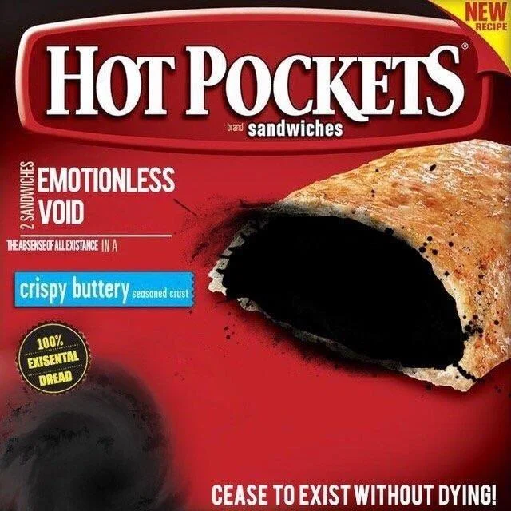

Emotionaless Void Hot Pockets

What better way to stop feeling sad than to stop feeling completly?
With this recipe you'll be able to stop feeling completly, meaning no more sad thoughts and not having to suffer from existencial dread, I mean at least until the effect runs out
Ingredients
- Hot Pockets Package
- A shattered soul
- A suffering heart
Steps
- Take the hot pocket out of the package
- Vent all of your problems to the hot pocket, share every issue that you're holding inside your soul
- Let the hot pocket consume all of your worries and turn them into a tasty meal
- Put the hot pocket in the microwave for 2 minutes
- DEVOUR THE HOT POCKET
Main Page